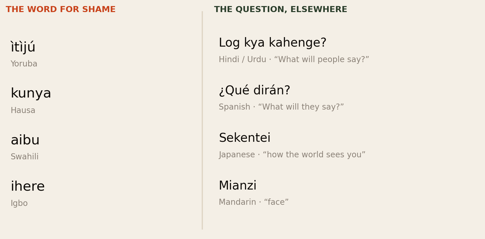
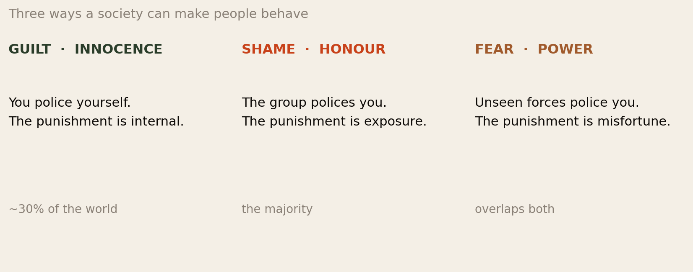
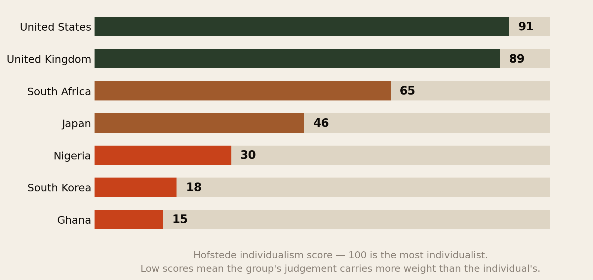
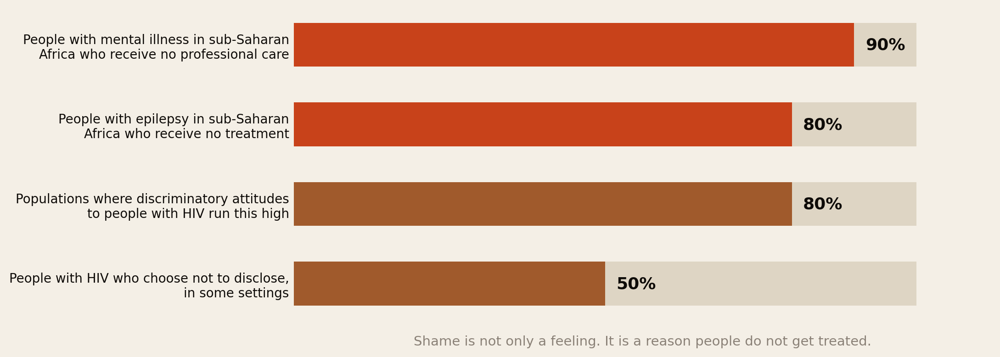
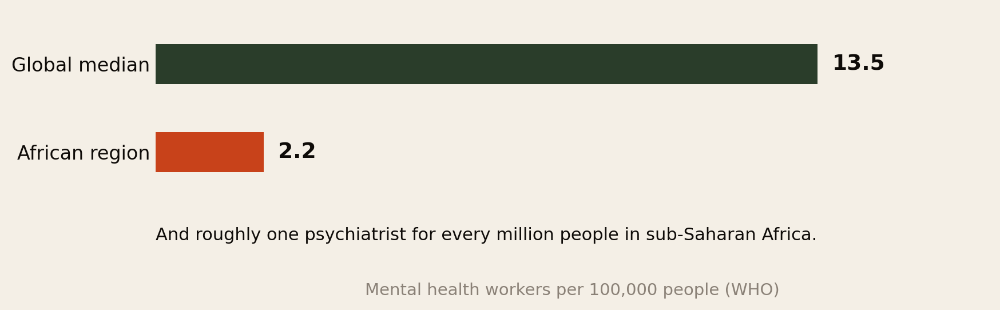
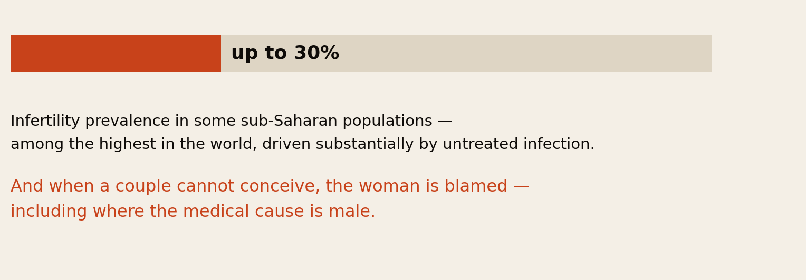
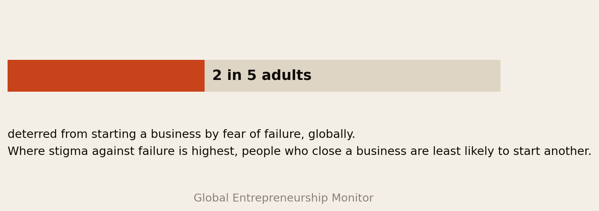

What Will People Say?
Shame is usually discussed as a feeling. It is more useful to treat it as a system of government — a way of enforcing behaviour that costs nothing to run and works without police, courts or records. It is extraordinarily effective. This report is about what it is for, and what the bill looks like.
Section 01The Short Version
Every society needs a way of making people behave without watching them. Rich, institutionalised societies mostly use law and internalised conscience. Most of the world, including most of Africa, uses something cheaper and older: the certainty that other people are watching, and that they will talk.
It works. That is the part usually missed. And it has a price, which is now measurable.
- The enforcement is real. On Hofstede’s individualism scale, where 100 is the most individualist, Ghana scores 15 and Nigeria 30, against 89 for the UK and 91 for the US. Low scores mean the group’s judgement outranks the individual’s.
- The health bill is enormous. Around 90% of people with mental illness in sub-Saharan Africa receive no professional care, and around 80% of people with epilepsy receive no treatment. Stigma is not the only cause — but in reviews of barriers to mental health care it accounts for about a quarter of the obstacles named most often.
- There is also almost nobody to go to. The African region has about 2.2 mental health workers per 100,000 people against a global median of 13.5, and roughly one psychiatrist per million in sub-Saharan Africa. Shame and scarcity reinforce each other: silence suppresses demand, and absent demand justifies not building services.
- Women pay disproportionately. Infertility prevalence reaches up to 30% in some sub-Saharan populations, and the woman is blamed even where the medical cause is male. Documented consequences include exclusion from ceremonies, disinheritance, violence and suicide.
- It suppresses risk-taking. Globally, fear of failure deters two in five adults from starting a business. Where stigma against failure is highest, people who have closed a business are least likely to start another.
- It follows people abroad. Our own research has repeatedly run into it: diaspora members who keep funding failing projects because stopping would be an admission, and who fear returning home more than they fear staying somewhere that is not working.
- And it is not an African peculiarity. Hindi has log kya kahenge. Spanish has ¿qué dirán? Japanese has sekentei. Mandarin has mianzi. Roughly two-thirds of humanity lives under some version of this. South Korea, at 18, is more collectivist than Nigeria.
Shame is not a flaw in African culture. It is a technology for producing order without institutions — and it becomes expensive at exactly the moment a society acquires institutions and forgets to switch.
Section 02Everybody Has a Word For It

Start with language, because it is the cheapest evidence available and it points the same way everywhere.
Hausa kunya does not translate cleanly as “shame.” It covers modesty, restraint, and the propriety that governs how you behave in front of in-laws and elders — a virtue as much as an affliction. Yoruba ìtìjú carries a similar double edge: to have none is a serious accusation.
That double edge is the whole subject. In English, shame is close to unambiguously bad — something to be recovered from. In much of the world it names both the punishment and the virtue of being susceptible to it. A person without shame is not free; they are dangerous.
And the question is universal. Log kya kahenge in South Asia. ¿Qué dirán? in Spain and Latin America. Sekentei in Japan — not quite “society” but the invisible watching public whose opinion regulates conduct. If a phrase exists in that many unrelated languages, it is describing something structural rather than something cultural.
Section 03Shame Is a Governance System
Here is the reframe this report is built on.
Every society has to solve the same problem: how do you get people to keep promises, care for relatives, avoid theft and honour obligations when nobody is checking? There are only a few available answers.
You can build institutions — contracts, courts, credit scores, police, registries. That is expensive. It requires functioning states, literacy, records, and enforcement that cannot be bought.
Or you can use reputation. Make everyone’s standing depend on what everyone else thinks, and the enforcement runs itself. No budget, no staff, no paperwork. In a village of four hundred people where you will live your whole life, this is not merely adequate — it is close to unbeatable.
Where the state is weak, shame is not a substitute for law. It is the law. And it is enforced by everyone, all the time, for free.
Read that way, several things stop looking like culture and start looking like engineering. Why obligations to distant relatives are enforceable without contracts. Why reputation is guarded so fiercely. Why the worst outcome is not being poor but being seen to have failed. Why in our investment report the enforcement mechanism running through every failure was guilt rather than any written agreement.
The system has one design characteristic that matters more than any other: it punishes visibility, not harm. An action is costly to the extent it is seen. That is a serviceable proxy for wrongdoing in a small community where everything is seen anyway. It becomes a very poor proxy in a city of fifteen million, and a catastrophic one when the thing being hidden is an illness.
Section 04The Architecture Is Universal
Section 03 asserted that shame punishes visibility rather than harm. That is not a rhetorical flourish. It has been tested experimentally, and the result is one of the more striking findings in modern psychology.
![Two findings. Finding one: across 15 small-scale societies including Japanese fishing villages, Indian pastoral communities and Mauritian farmers, how much shame people expect to feel about an act tracks how much others would devalue them for it, and the correlation held within cultures and across them (Sznycer et al, PNAS 2018). Finding two: participants imagined an act that was morally unimpeachable but could be read badly by others, and shame rose with how public the act was rather than how wrong it was (Robertson, Sznycer, Delton, Tooby and Cosmides, Evolution and Human Behavior 2018).](img/architecture.png)
The first comes from a 2018 PNAS study across fifteen small-scale societies — fishing villages in Japan, pastoral communities in India, farmers in Mauritius, and others with little contact with the wider world. Researchers asked one group how much shame they would feel about a given act, and a different group how negatively they would view someone who did it.
The two tracked each other closely, within cultures and across them. The intensity of shame a person anticipates corresponds to the amount others would devalue them for it — and it does so in societies that have never encountered one another. The paper reports the association held more tightly with local audiences than foreign ones, which is what you would expect if the mechanism is universal and the audience is local.
The second finding is the one that matters most here. In a 2018 study in Evolution and Human Behavior, participants imagined taking an action that was morally unimpeachable but open to unfavourable interpretation. Shame rose with the publicity of the act — not with any wrongdoing, because there was none.
The paper is titled: The true trigger of shame: social devaluation is sufficient, wrongdoing is unnecessary. That sentence is the engine of everything in this report.
This is what researchers call information threat theory: shame evolved not to punish bad acts but to limit the spread of information that lowers your value to the group. For most of human history, being cast out of a small band was fatal. A system that made you feel appalling before the information spread was, on those terms, life-saving.
Three consequences follow directly, and they reshape the rest of this report.
- The mechanism is not cultural. The content is. Every human society runs the same shame machinery. What differs between Lagos and Oslo is only what has been loaded into it — which acts and conditions are treated as devaluing. That is a far more optimistic finding than it sounds, because content is editable and architecture is not.
- It explains Section 07 exactly. If shame tracks devaluation rather than wrongdoing, then a condition — infertility, epilepsy, a mental illness — triggers it just as efficiently as a crime, provided the community devalues you for it. There is no malfunction. The system is doing precisely what it evolved to do, aimed at a target it did not evolve for.
- It explains why concealment feels rational. If the threat is information spreading rather than the fact itself, then hiding is not weakness or denial. It is the correct move given the incentives — which is why exhortations to “just be open” fail, and why changing what the audience devalues works.
It also settles the argument in the next section before it starts. If the architecture is invariant across societies that have never met, then dividing the world into “shame cultures” and “guilt cultures” is describing differences in content and emphasis, not differences in kind — and certainly not differences in sophistication.
Section 05Three Ways to Make People Behave

The standard framework distinguishes three modes of enforcement. In guilt cultures the punishment is internal: you feel bad even if nobody knows. In shame cultures the punishment is exposure: what matters is being seen. In fear cultures the sanction is attributed to unseen forces — misfortune, ancestors, spiritual consequence.
Estimates commonly put guilt-innocence at roughly 30% of the world, with the remainder predominantly honour-shame or fear-power.
We include this framework because it is genuinely clarifying, and then we have to say plainly that the popular version of it is bad social science. It originates largely in wartime anthropology and later missionary literature. Its usual mapping — the West as guilt, Asia and the Middle East as shame, Africa as fear-power — is crude, essentialising, and carries an unmistakable hierarchy, with the West assigned the introspective conscience and Africa assigned superstition.
All three mechanisms operate in every society. British bankruptcy carries shame; Nigerian courts enforce law; American reputational cancellation is shame with a modern interface. What differs is the mix and the weighting, and that is measurable without the typology.
Section 06Where Africa Actually Sits

Set against actual measurement, the picture is both clearer and less flattering to the typology.
Ghana at 15 and Nigeria at 30 are strongly collectivist. So is South Korea at 18 — more collectivist than Nigeria, in one of the richest, most institutionalised, most technologically advanced societies on earth. Japan sits at 46, near the middle. South Africa at 65 is closer to Britain than to Ghana, which is partly a real difference and partly an artefact of who was surveyed.
Two conclusions follow, and they matter for everything after.
- This is not an African trait. The most collectivist country in Fig 4 is in East Asia. Whatever is happening is not about Africa, and any argument that treats it as an African cultural defect is refuted by the chart.
- It does not disappear with development. South Korea got rich without becoming individualist. Shame-based enforcement is not a stage that societies grow out of on the way to modernity — which means the costs described below are not self-correcting.
“Africa” is also doing far too much work in this discussion. Fifty-four countries, over a thousand languages, and enormous internal variation between urban and rural, north and south, one ethnic group and its neighbour. Everything in this report should be read as a pattern with heavy local exceptions.
Section 07What Is Shameful
![List of recurring shame domains across African societies: mental illness treated as spiritual failure or family disgrace; infertility blamed on the woman whatever the medical cause; divorce and singleness read as a personal defect especially for women; business failure hidden rather than learned from; debt concealed until it is unrecoverable; returning home with the migration read as a verdict on the person; disability and epilepsy explained by curse or contagion; sexuality criminalised in much of the continent.](img/domains.png)
Look at that list and a pattern appears immediately. Almost every item is something that happens to a person rather than something they did.
Infertility is a medical condition. Epilepsy is a neurological one. Mental illness is an illness. Business failure is frequently a currency movement. Being unmarried at thirty-five is not an act.
This is the central malfunction. A reputational system evolved to punish choices — theft, betrayal, broken obligations — has been pointed at conditions. And the sanction it applies, exposure, is precisely the wrong treatment for every condition on the list, because all of them require disclosure to be resolved.
You cannot be treated for something you cannot admit to having.
Section 08The Bill: Health

This is where the abstraction becomes a body count.
Around 90% of people needing mental health care in sub-Saharan Africa never receive professional care. In a systematic review of barriers, stigmatisation accounted for about a quarter of the obstacles encountered most often. Around 80% of people with epilepsy in sub-Saharan Africa receive no treatment — a condition that is often controllable with inexpensive medication. A large study in suburban Senegal found 51% of respondents believed evil spirits caused epilepsy; surveys in Rwanda found most respondents thought people with epilepsy should not be allowed to attend school or work.
On HIV, pooled analysis across African countries finds discriminatory attitudes running as high as 80% of the population in some settings, and more than half of people with HIV in some settings choosing not to disclose their status.

We want to be careful not to blame culture for a budget problem. The African region has about 2.2 mental health workers per 100,000 against a global median of 13.5, and roughly one psychiatrist per million people. Much of the 90% would go untreated in a society with no stigma at all, simply because there is nowhere to go.
But the two are not independent, and this is the important point. Silence suppresses measured demand. Absent demand justifies not funding services. Absent services make disclosure pointless, which deepens the silence. Stigma and scarcity are a loop, not two separate problems, and either one can be attacked to weaken the other.
Section 09The Bill: Who Carries It

Shame is not distributed evenly. It is concentrated, and the clearest case is infertility.
Sub-Saharan Africa has some of the highest infertility prevalence in the world — reaching up to 30% in some populations, with rates between 15% and 30% reported in South Africa, Nigeria and Ethiopia. Much of it is preventable, caused by untreated reproductive tract infection.
The research finding that matters is this: women are blamed even when male-factor infertility is medically identified as the cause. The documented consequences are not social awkwardness. Studies across Egypt, Nigeria, Mozambique and the Gambia record childless women being excluded from ceremonies, treated as inauspicious, kept away from children, ostracised, disinherited, subjected to physical and psychological violence, and in some cases driven to suicide.
The mechanism is worth stating precisely, because it recurs everywhere shame operates. A woman’s standing is tied to an outcome she does not control, and the sanction lands on whoever is most socially exposed rather than on whoever is medically responsible. That is not a moral system malfunctioning at the edges. It is what a visibility-based system does by default.
The same logic explains why the burden falls hardest on women in divorce, on unmarried women, on people with disabilities, on the poor, and on anyone whose situation is legible from outside.
Section 10The Bill: Risk and Money

Economies need people to try things that might not work. Shame is expensive here in a way that compounds.
Globally, fear of failure deters roughly two in five adults from entrepreneurship. More specifically, research finds that in countries where stigma against business failure is highest, entrepreneurs who exit a failed business are less likely to re-enter — the talent is not merely discouraged once, it is removed permanently.
Three consequences follow directly, and each shows up elsewhere in this library:
- Failure is concealed rather than examined. If a closed business is a personal disgrace, nobody publishes what went wrong, and the next person repeats it. Shame destroys the feedback loop that makes an economy learn.
- Debt is hidden until it is unrecoverable. The point at which a problem is admitted is the point at which it can still be solved. Shame moves that point later, often past the point of rescue.
- People fund failing projects rather than admit them. Our investment report found exactly this: diaspora members continuing to send money to builds they had privately stopped believing in, because stopping would be a public verdict.
Section 11The Bill: The Diaspora
Migration does not escape this system. It intensifies it, for a structural reason: you are now being judged by people who cannot see your circumstances.
Across our own research, the same mechanism has surfaced from four different directions:
- The obligation you cannot refuse. A contributor writing about Cameroon named it the loyalty tax: where contracts are weak, guilt is the enforcement mechanism, and the person abroad cannot credibly walk away without abandoning a village.
- The asymmetry of visibility. People at home see the currency conversion, not the rent. A refusal reads as hoarding rather than as being stretched. Shame requires an audience that can see, and this audience structurally cannot.
- The fear of returning. Every community has the story of the man who came back after ten years with one bag. That story is not really about money — it is the migration itself being read as a verdict on the person. It keeps people in situations that are not working long past the point where leaving would be rational.
- The silence about not coping. Recurring accounts describe people funding relatives while living on savings, or reaching sixty abroad with no retirement provision, and never saying so — because the one thing that cannot be admitted is that the migration did not deliver.
And the audience no longer has edges
One further mechanism deserves naming, because it is recent enough that most people have not adjusted to it. Before social media, you experienced shame in front of specific groups — family, colleagues, church — each with different standards. Researchers call what happened next context collapse: a single post is now seen by every one of those audiences simultaneously.
For the diaspora this is unusually severe. A photograph intended for friends in Manchester is also read in Enugu, by people applying an entirely different standard and drawing conclusions about how well you are doing. There is no longer a version of your life visible only to the people who understand it.
That has a direct and expensive consequence, and it connects this report to our investment research. If every image of your life abroad is evidence submitted to a community that reads success into it, the rational move is to curate success and conceal strain — which inflates expectations at home, which raises the requests, which makes the strain harder to admit. The performance and the pressure produce each other.
The diaspora exports the enforcement and imports none of the support. You remain fully accountable to a community that can no longer see you, and fully unable to explain a life it has never witnessed.
There is a specific, cruel version of this in the health data. Africans abroad live in countries where mental health services exist and are frequently free at the point of use — and carry the disclosure norms of societies where they do not. The scarcity constraint is lifted; the shame constraint travels.
Section 12The Cultures That Share It
Nothing above is African, and the comparison is not a consolation. It is analytically useful, because other societies have run this experiment further and their results are visible.
| Where | The concept | How it shows up |
|---|---|---|
| South Asia | Log kya kahenge — “what will people say” | Career choices abandoned, marriages constrained by caste and community expectation. The phrase is common enough to be the title of plays and films. |
| Japan | Sekentei — standing before the watching world | Seken is not quite “society”; it is an invisible shared sense of what everyone will think, functioning as a moral observer. Widely discussed domestically in relation to conformity pressure and bullying. |
| China | Mianzi — face | Reputation as a transactable asset, given and lost on others’ behalf as well as your own. |
| South Korea | Individualism score 18 | More collectivist than Nigeria, in a high-income, highly institutionalised economy. The clearest evidence that wealth does not dissolve this. |
| Spain & Latin America | ¿Qué dirán? | Shame tied to family honour and reputation — and notable for persisting inside a culture that scores as relatively individualist. |
| Arab world & Mediterranean | Honour–shame as an organising frame | The classical reference case in the anthropological literature, and the origin of most of the theory. |
Two things are worth taking from that table.
First, Spain complicates the standard story. It scores as a fairly individualist society and still runs on ¿qué dirán? Shame is not simply the inverse of individualism, which means the Hofstede numbers in Fig 4 explain less than they appear to.
Second, and more usefully, South Korea is the natural experiment. It industrialised, democratised and got rich while remaining more collectivist than most of West Africa. Anyone arguing that African societies will shed shame-based enforcement automatically as incomes rise has to explain Korea. The honest conclusion is that this changes when it is deliberately changed, and not otherwise.
Section 13What Shame Is Actually For
A report that only counted costs would be dishonest, and would also be useless as a guide to changing anything. Shame persists because it does real work, and the work is worth naming.
- It enforces care. The obligation to house a cousin, school a nephew, bury a stranger properly, feed whoever arrives. Societies with strong welfare states outsource this to the tax system. Where there is no such system, shame is the pension, the insurance and the safety net — and it works, unglamorously, every day.
- It makes agreements enforceable without courts. Where contract enforcement is slow or purchasable, reputation is often the only functioning collateral.
- It restrains behaviour that law does not reach. Rudeness to elders, neglect of a parent, public cruelty. Nobody is prosecuting these anywhere.
- Hausa kunya is instructive. It is not simply a burden — it names a virtue of restraint and propriety. The English framing of shame as pure pathology is itself a culturally specific position, and importing it wholesale is its own kind of error.
The realistic goal is therefore not the abolition of shame, which would be neither possible nor desirable. It is narrowing its target — keeping the sanction pointed at choices and moving it off conditions.
Section 14What Actually Changes It
The evidence on stigma reduction is thinner than the evidence on stigma. But the pattern across the literature and across the cases in this report is consistent enough to state.
- Contact beats information. Campaigns that explain a condition move attitudes less than knowing someone who has it and is otherwise unremarkable. This is why disclosure by respected people is disproportionately powerful, and why the first person to speak carries the most cost and does the most good.
- Reattributing cause does specific work. Where 51% of people believe evil spirits cause epilepsy, a medical explanation is not a small intervention — it moves the condition out of the moral category entirely. The same applies to naming male-factor infertility out loud.
- Services create permission. Availability changes disclosure, not only the reverse. A clinic that exists makes admitting the problem rational; where nothing exists, silence is the sensible strategy.
- Structure beats willpower in families. The arrangements diaspora members reported building — a nominated gatekeeper, an evidence rule, a fixed ceiling — all work by replacing a shame transaction with a documented one. That is the same move as a contract, at family scale.
- Language is a lever, and it is free. “She is barren” and “the couple has an untreated infection” describe the same situation and assign blame entirely differently.
Section 15The Uncomfortable Part
First, this subject is a magnet for condescension, and we have tried to avoid earning it. There is a long and ugly tradition of Western writing that treats African social norms as backwardness to be outgrown. The single most useful fact in this report is that South Korea is more collectivist than Nigeria. Whatever this is, it is not a developmental deficiency.
Second, the people enforcing shame are usually not villains. The aunt who will not discuss her nephew’s depression, the community that isolates a childless woman — they are running the operating system they were handed, in which visible deviation genuinely threatened everyone’s standing. Blaming individuals for a systemic incentive is both unfair and ineffective. The incentive is what has to change.
Third, and least comfortable: some of the shame is doing something we would miss. The obligation that makes remittances non-negotiable is the same obligation that keeps a grandmother fed. Loosen it and some people are freer and some people are hungrier. Anyone who tells you this trade-off does not exist is selling something — usually individualism, and usually to people who cannot afford it.
The goal is not a society where nobody cares what anyone thinks. It is a society where what people think is triggered by what you did, not by what happened to you.
Section 16Method & Limits
This report assembles published research as at 19 August 2026 and reads it through a single frame: shame as a mechanism of social enforcement with measurable costs.
- “Africa” is doing far too much work throughout. Fifty-four countries and over a thousand languages are not one culture. The evidence base is also heavily weighted toward Nigeria, Ghana, Kenya, Ethiopia and South Africa, because those are the countries that publish. Francophone and Lusophone Africa are under-represented here for that reason and no other.
- Hofstede’s scores are contested and should not be over-read. They derive from survey work begun decades ago, originally within a single multinational employer, and assign one number to an entire country. They are indicative of broad orientation, not precise measurements, and several African scores rest on regional estimates rather than country-specific fieldwork. Fig 4 is a rough ordering, not a ranking.
- The guilt–shame–fear typology is not neutral. It comes substantially from wartime anthropology and missionary literature, and its conventional mapping of Africa to “fear-power” carries an implicit hierarchy we reject. We present it because it clarifies a real distinction and because readers will encounter it, not because we endorse its geography.
- Treatment gaps have multiple causes and stigma is only one. The 90% and 80% figures in Fig 6 reflect workforce shortage, cost, distance, medication supply and policy as well as shame. We have shown the workforce data alongside precisely so the gap is not attributed entirely to culture.
- Correlation is not mechanism. We argue that shame causes specific costs. Most of the underlying research establishes association — that stigma is reported as a barrier, that fear of failure correlates with lower entry. Causal identification in this literature is genuinely hard and we have not overstated it.
- The African-language terms in Fig 1 are dictionary equivalents, not ethnographic analysis. Each carries meaning the English word does not, and we have flagged kunya and ìtìjú specifically because both name a virtue as well as a sanction. A linguist would have more to say about all four.
- Section 11 is argument, not measurement. No study measures shame among the African diaspora specifically. That section connects mechanisms documented elsewhere to accounts recorded in our previous report, which were themselves self-reported and unverifiable.
- The evolutionary literature in Section 04 reached us through a secondary source. A member of this network shared Mark Manson’s Shame, Solved guide, which pointed at the Sznycer and Robertson papers. We went to the primary studies and cite those; the guide is credited as the pointer, not as evidence.
- The findings in Fig 2 are robust but narrow. They establish that anticipated shame tracks anticipated devaluation, in hypothetical scenarios, using self-report. That is a strong result about the architecture of the emotion. It is not a measurement of how shame operates in a real family, a real clinic or a real village, and we have not stretched it that far.
- Nothing here is clinical advice. If any of it describes your situation, the relevant professional is a doctor rather than a research report.
Principal sources: Hofstede cultural dimensions via Clearly Cultural and comparative summaries; WHO and UNICEF on the mental health workforce in sub-Saharan Africa; a systematic review of mental illness stigmatisation in Africa and a systematic review of barriers to mental health services; epidemiology of epilepsy in sub-Saharan Africa; pooled analysis of HIV stigma and testing across Africa; systematic review and meta-synthesis of infertility-related stigma in Africa and infertility prevalence in sub-Saharan Africa; Global Entrepreneurship Monitor on fear of failure and Small Business Economics on failure stigma and re-entry; Log Kya Kahenge and research on shame socialisation in Japan on comparative concepts; Sznycer et al., PNAS (2018) on cross-cultural invariances in the architecture of shame and Robertson et al., Evolution and Human Behavior (2018) on the true trigger of shame; Waisanen on social media and context collapse. The evolutionary literature was located via Mark Manson’s Shame, Solved guide.
Companion reports: You Sent the Money. Did You Buy Anything? and How Long Until It Was Worth It?
The diaspora helps the diaspora.
Africa Global Forum is a peer network for Africans abroad — help each other, sit together, and bounce ideas. This research is part of an open library, free to read and share.